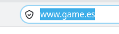
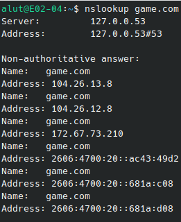
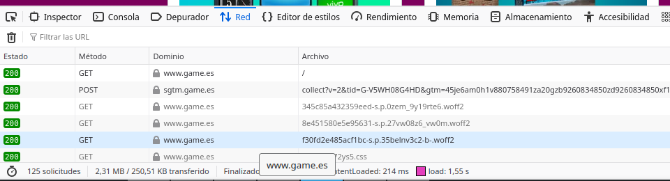
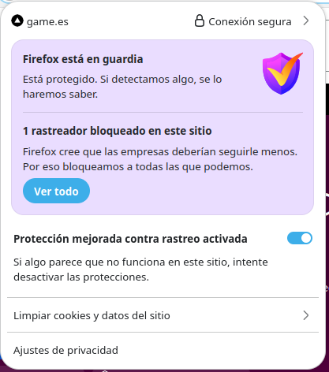
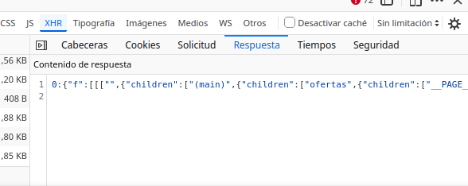

La web que he elegido
He elegido GAME porque ES MI PAGINA FAVORITA.
Glosario
| Término | Definición con mis palabras | Ejemplo en mi web |
|---|---|---|
| Cliente | Dispositivo o software (como tu navegador web) que solicita recursos o servicios a un servidor. | Tu ordenador o móvil cuando entras en game.es para buscar un videojuego. |
| Servidor | Un ordenador potente o sistema que almacena información y responde a las solicitudes de los clientes. | Los ordenadores centrales de GAME que almacenan todo el catálogo de productos y datos de usuarios. |
| Servidor web | Software especializado instalado en un servidor que procesa y sirve páginas web a los clientes. | El software encargado de recibir tus peticiones al entrar en game.es y devolver la página de inicio. |
| Apache | Un servidor web de código abierto muy popular encargado de procesar peticiones HTTP y entregar contenido. | El software servidor web que podría gestionar la entrega de archivos estáticos e imágenes de la tienda. |
| URL | La dirección completa que se introduce en el navegador para localizar un recurso o página específica en internet. | [https://www.game.es/videojuegos/playstation-5](https://www.game.es/videojuegos/playstation-5) |
| Protocolo | Conjunto de reglas estandarizadas que permiten la comunicación y transmisión de datos entre dispositivos. | HTTP o HTTPS, que dictan cómo tu navegador solicita el catálogo de juegos. |
| Dominio | El nombre único y fácil de recordar que identifica a un sitio web en internet, vinculado a una IP. | game.es |
| Ruta | La parte de la URL que especifica la ubicación exacta de un archivo o sección dentro del servidor. | /videojuegos/playstation-5 dentro de la web de GAME. |
| Dirección IP | Una secuencia numérica única que identifica a cada dispositivo conectado a una red. | La dirección IP numérica asignada al servidor principal donde está alojado GAME. |
| DNS | Sistema que traduce nombres de dominio legibles por humanos a direcciones IP numéricas. | Traduce game.es a la dirección IP numérica del servidor de la tienda para que tu navegador lo encuentre. |
| HTTP | Protocolo de transferencia de hipertexto utilizado para transmitir páginas web sin cifrar por la red. | El protocolo básico utilizado inicialmente o en secciones no sensibles de la navegación. |
| HTTPS | Versión segura de HTTP que utiliza cifrado (SSL/TLS) para proteger los datos enviados entre cliente y servidor. | [https://www.game.es](https://www.game.es), usado al iniciar sesión o introducir datos bancarios para comprar un juego. |
| Puerto | Un número lógico que identifica un canal específico para un tipo de servicio de red en un servidor. | El puerto 80 para HTTP o el puerto 443 para HTTPS por donde entran las visitas a la tienda. |
| Petición | Mensaje enviado por el cliente (navegador) al servidor solicitando ver un recurso o página. | Cuando haces clic en una categoría de consolas y tu navegador solicita esa información al servidor. |
| Respuesta | El mensaje que devuelve el servidor al cliente con el código HTML, imágenes o datos solicitados. | El servidor devuelve la página con la lista de consolas y precios disponibles. |
| Código de estado | Número de tres cifras devuelto por el servidor que indica el resultado de la petición (éxito, error, etc.). | Un código 200 OK si el producto carga bien, o 404 Not Found si el juego ya no existe. |
| Web estática | Página web compuesta de archivos fijos que se muestran tal cual, sin cambiar dinámicamente. | Una página informativa de términos, condiciones o aviso legal de GAME. |
| Web dinámica | Página web cuyo contenido se genera al momento combinando bases de datos y código de programación. | La tienda online principal de game.es, donde el stock y los precios cambian en tiempo real. |
| PHP | Lenguaje de programación interpretado del lado del servidor muy usado para crear webs dinámicas. | Lenguaje que puede procesar la lógica de los formularios de registro o el carrito de compra. |
| Base de datos | Sistema organizado para almacenar, gestionar y consultar grandes volúmenes de información estructurada. | Donde GAME almacena el stock de videojuegos, precios, usuarios y pedidos realizados. |
| LAMP | Conjunto de software (Linux, Apache, MySQL, PHP) usado habitualmente para alojar webs dinámicas. | La pila tecnológica que podría dar soporte al servidor web y base de datos de la tienda. |
| JSON | Formato ligero de intercambio de datos basado en texto, muy utilizado en APIs y aplicaciones web. | Cuando el buscador de GAME muestra resultados instantáneos (AJAX) sin recargar toda la página. |
| XML | Lenguaje de marcado estructurado para almacenar y transportar datos mediante etiquetas personalizadas. | Un archivo de mapa del sitio (sitemap.xml) para que los buscadores indexen los productos de GAME. |
Evidencias




